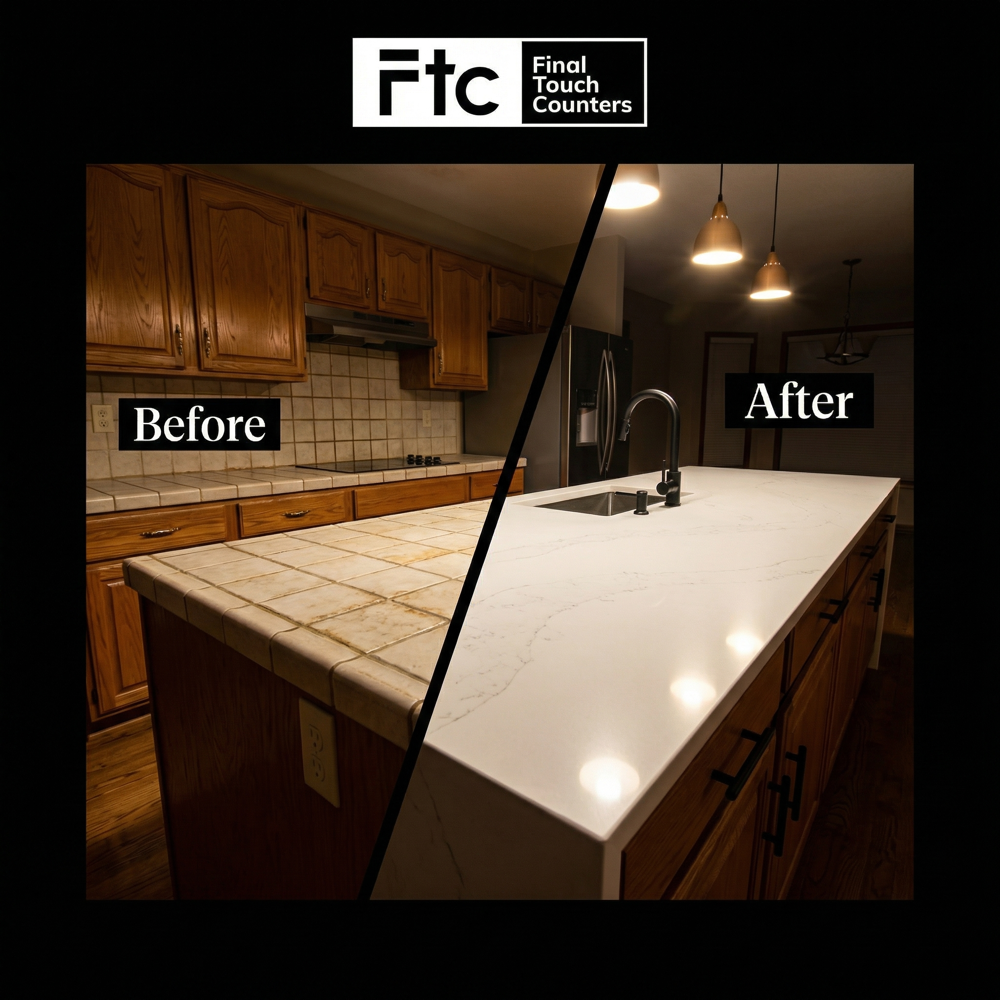
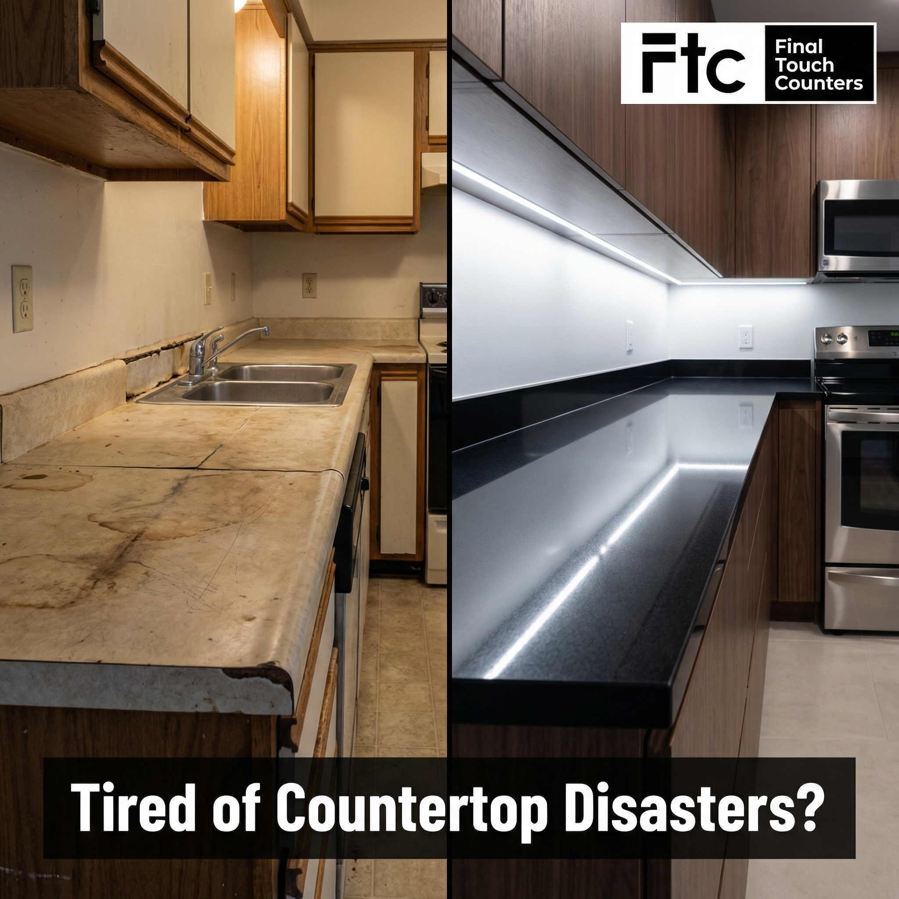
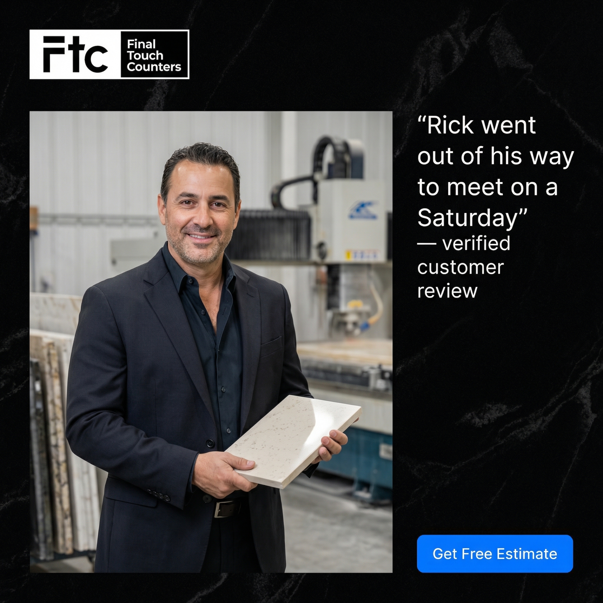
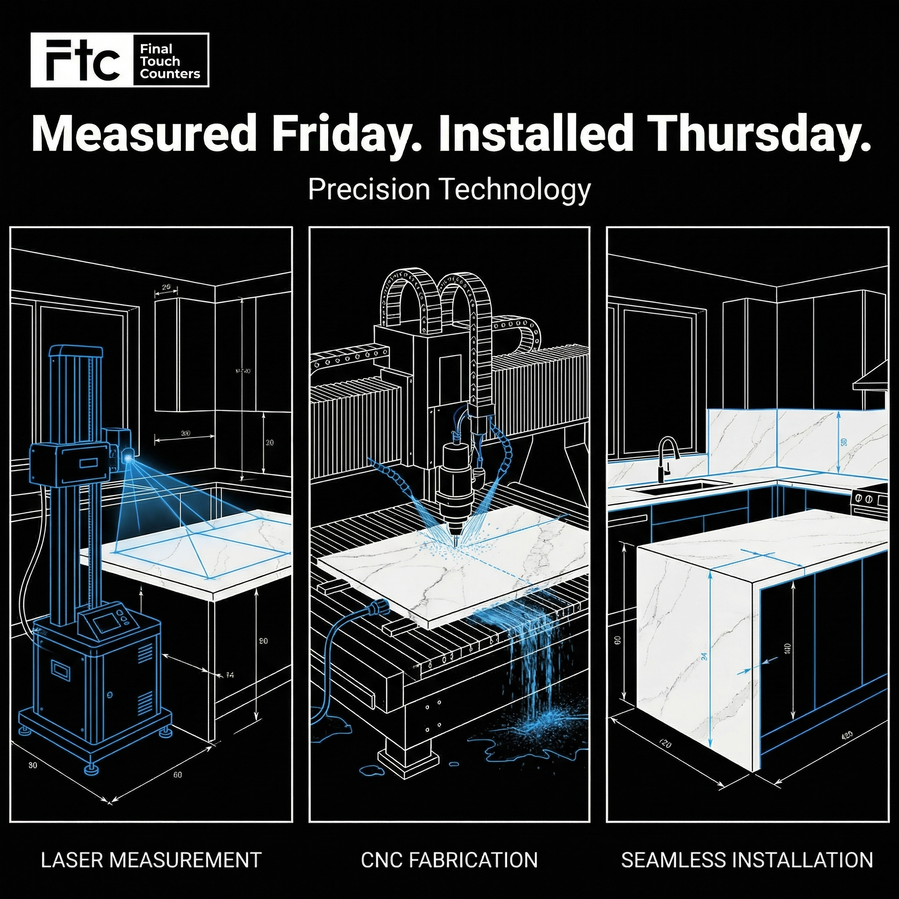
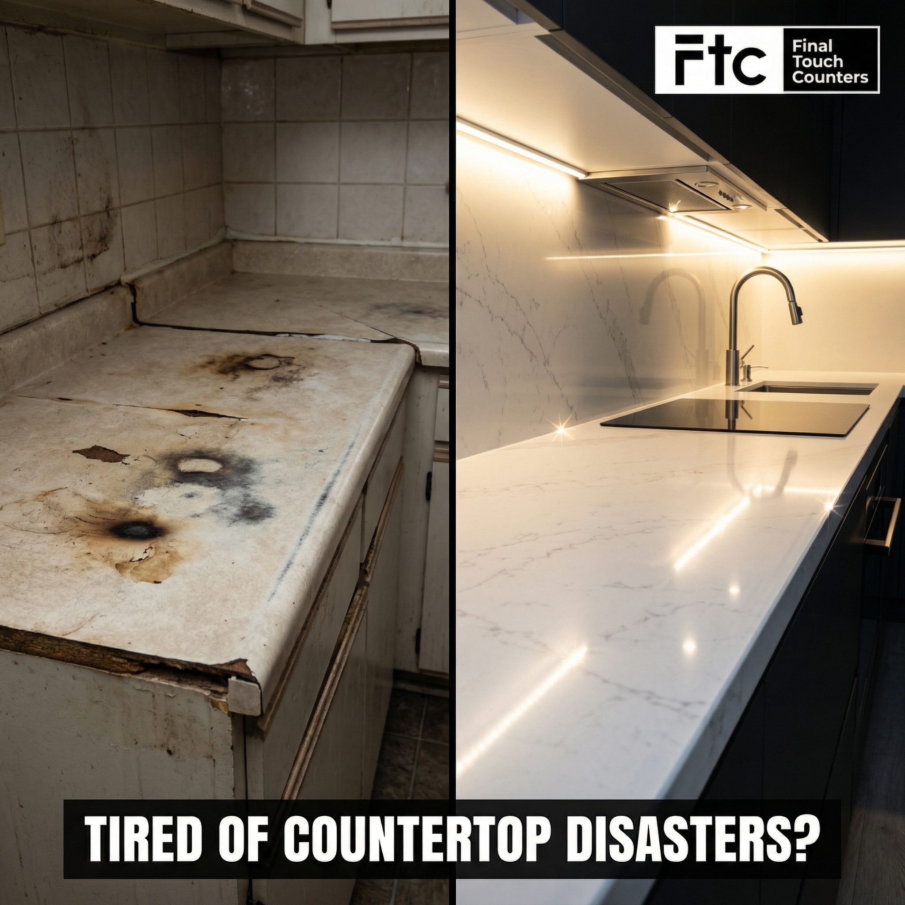
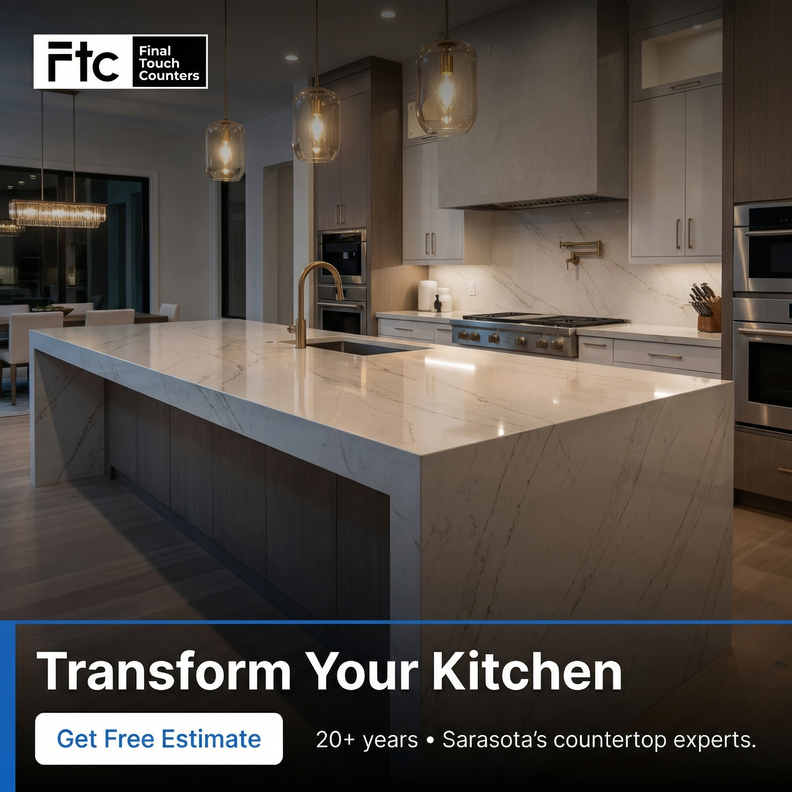

Built exclusively for Final Touch Counters
I will help you get 10 new clients within 14 days with this Meta ads funnel I created for you.
Let's get this live
No cost, no obligation - 30 min to see if it fits
Everything below is yours, for free
Nine image ads, three short-form scripts, and one dedicated landing page built around Final Touch's real strengths: laser templating, CNC precision, fast turnaround, and Rick's direct owner involvement.
A full-funnel ad set that leads with contractor pain, proves the technology edge, and pushes high-intent prospects toward a free estimate.
Scripts built around the three strongest angles in the brief: technology precision, speed plus quality, and trust through owner involvement.
A conversion page designed to continue the ad story and move homeowners from curiosity into an estimate request without sending them to a generic homepage.
Why this matters
Homeowners are not just shopping for stone. They are trying to avoid delays, sloppy installs, and expensive mistakes. Final Touch wins when the message makes the technology, process, and owner accountability impossible to miss.
Laser templating and CNC fabrication create a clear competitive difference that most countertop companies never explain well in their ads.
Measured Friday and installed Thursday is powerful because it is backed by five-star workmanship, not rush-job positioning.
Owner involvement makes the brand feel accountable and premium, especially for homeowners who have already been burned by unreliable contractors.
Image ads
Each concept maps to the selected ad mix for Final Touch Counters and uses the local creative files in `./images/`.

Start with the frustration homeowners already feel: contractors who show up late, leave a mess, and deliver sloppy countertop installs.

Use a dramatic countertop transformation to make the visual payoff obvious and show how dated surfaces become clean, premium focal points.

Show material variety and finish quality in one glance so prospects can picture Final Touch handling everything from quartz to marble to porcelain.

Put Rick front and center so the business feels personal, accountable, and more trustworthy than a faceless fabrication shop.

Lift the strongest review language into the creative so prospects see proof of speed, cleanliness, organization, and workmanship immediately.

Make the technology advantage concrete by showing laser templating, CNC cutting, and the precision process behind a perfect final fit.

Frame the free estimate as expert guidance backed by precision technology, not just another generic quote request.

Use one standout installation as the hero image that makes the craftsmanship feel high-end before a single line of body copy is read.
Anchor the offer to Sarasota, Punta Gorda, and North Port so the brand feels local, established, and familiar to homeowners in-market.
Video scripts
These are the full talk tracks with filming notes so the videos can be recorded directly from this page.
Final Touch is not just another countertop installer. It uses laser templating and CNC fabrication to deliver a level of fit, finish, and confidence that cheap competitors cannot match.
"What if your countertop was measured with laser precision?"
"Most countertop companies use manual measurements. We use laser technology. That means your template is accurate to the millimeter."
"Then our CNC machine cuts your countertop with the same precision used in aerospace manufacturing."
"The result? Countertops that fit perfectly. No gaps. No crooked seams. Just beautiful stone surfaces that look like they grew there."
"We've been doing this since 2005. And in 2020, we invested in this technology to bring Fort Myers and Sarasota homeowners the best countertops in Florida."
"Click the link below to get your free estimate. See the laser templating process in action and get a quote for your kitchen or bathroom."
"Final Touch Counters. Precision craftsmanship that exceeds expectations."
Environment: fabrication facility with CNC machine visible. Camera: direct-to-camera medium shot plus technology close-ups. Framing: spokesperson segments mixed with laser templating and machine action. Lighting: clean industrial light with polished highlights on stone. Energy: confident, technical, reassuring. Wardrobe: professional business casual in black or navy with stone samples and measuring tools in frame.
This script turns a fast turnaround into a premium advantage by tying speed directly to process quality, workmanship, and a repeatable installation system.
"Measured Friday. Installed Thursday. Without cutting corners."
"You need new countertops. But you don't want your kitchen torn apart for weeks. And you definitely don't want to sacrifice quality for speed."
"Here's what one of our customers said: 'We scheduled the measuring on a Friday. The countertops were installed by the next Thursday. Workmanship exceeded our expectations.'"
"Five-star installation. Neat, complete, well organized. That's not luck. That's a process refined over 20 years."
"From laser templating to CNC fabrication to expert installation - every step is optimized for speed without sacrificing the quality your home deserves."
"Ready for countertops that fit your timeline and exceed your expectations? Click below for your free estimate."
"Final Touch Counters. Fast. Precise. Beautiful."
Environment: completed kitchen projects and install scenes. Camera: quick-cut b-roll followed by direct-to-camera explanation. Framing: moving walkthrough opener, then neat installation and finished surface detail shots. Lighting: bright finished-home lighting. Energy: efficient, credible, quality-focused. Wardrobe: polished business casual in dark colors to match the brand.
Rick's continued hands-on role makes Final Touch feel accountable, experienced, and personal, which is exactly what anxious homeowners want from a premium countertop company.
"I'm Rick Teixeira, and I still personally meet with our customers."
"I started Final Touch in 2005. Back then, it was just me and tile installation. But I saw how much homeowners struggled to find quality stone countertops. So in 2020, we expanded. Invested in CNC machines. Laser technology."
"Now we serve homeowners, builders, and designers across Sarasota and Fort Myers. But here's what hasn't changed - I still go out of my way to meet with customers. Even on Saturdays."
"'Rick went out of his way to meet on a Saturday. Workmanship exceeded our expectations.'"
"'Rick was amazing. I highly recommend FTC.'"
"'Always on time, excellent service.'"
"When you work with Final Touch, you get my personal attention. And a team that treats your home like it's their own."
"Click the link below. I'll personally review your project and make sure you get the countertops your home deserves."
"Final Touch Counters. Where the owner still cares."
Environment: fabrication facility with Rick Teixeira and finished countertop shots. Camera: founder-led talking head with supporting testimonial overlays. Framing: medium eye-level shot, facility walk-and-talk, then close detail shots of stone and installations. Lighting: professional and clean. Energy: direct, trustworthy, owner-led. Wardrobe: Rick in polished business casual, dark colors, with facility equipment visible behind him.
Your custom landing page
The ads do not send prospects to a generic site. They move them to a page built to continue the precision story, reinforce trust, and drive free estimate requests with less friction.
A homepage splits attention across services, navigation paths, and general browsing. This page keeps one message, one offer, and one action in front of the prospect.
It carries the ad promise forward fast, translates the technology into homeowner benefits, and makes the estimate feel low-friction and high-trust.
System flow
Different angles reach homeowners who care about trust, speed, material quality, and precision workmanship.
The click lands on a focused page that continues the same promise without distractions or weak positioning.
The form captures real project interest and gives your team cleaner context before the conversation starts.
Fast response keeps momentum high and turns estimate requests into active conversations while intent is strongest.
Your team speaks with warmer prospects who already understand the technology edge and why Final Touch feels safer.
Ready to launch
The strategy is already built around Final Touch's strongest proof. The call is where we decide whether it makes sense to turn the system on.
How it works
A short call confirms the estimate offer, target geographies, and whether the initial push should prioritize kitchens, baths, or both.
The ads, scripts, and landing-page flow get implemented as one system so the message stays consistent from first impression to form fill.
The funnel generates the inbound conversations. Final Touch handles measurement, quoting, follow-up, and the project close.
Case studies
Different markets, same principle: tighter message alignment creates better downstream conversations.


About
I build lead-generation systems for service businesses that need a clearer path from attention to real sales conversations.
For a brand like Final Touch, that means using the strongest differentiators already inside the business, like the technology stack, the turnaround speed, and Rick's personal involvement, instead of relying on commodity messaging.
If the strategy feels aligned, we can walk through how this would work in practice and decide whether it makes sense to launch.
FAQ
Because the fastest way to show the thinking is to build the funnel concept first. If the strategy holds up on the call, then we can talk about implementation.
You should pressure-test the logic on the call and make sure the positioning fits your market. That is a better filter than taking any pitch page at face value.
You usually get an early signal quickly. Inside a 14-day test window, you should know whether the message is attracting the right type of estimate request.
Mainly alignment on the offer, quick feedback, and someone on your team ready to follow up promptly once leads start coming in. We can cover specifics on the call.
That depends on how aggressively you want to fill the pipeline and how broad the initial geography should be. We can work backward from project value and desired volume on the call.
Let's do this
If this direction feels right, pick a time below and we will walk through the funnel together.